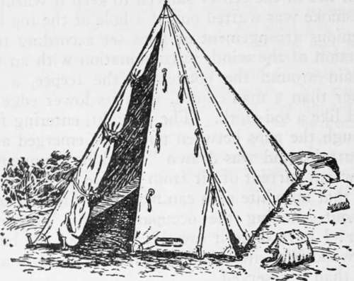
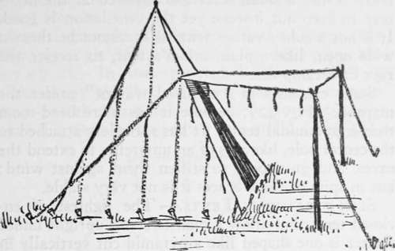
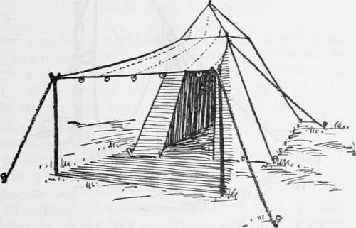

Types Of Light Tents. Part 2
Description
This section is from the book "Camping And Woodcraft", by Horace Kephart. Also available from Amazon: Camping and Woodcraft.
Types Of Light Tents. Part 2
No. 8 holds the hood ring on the center pin, and superintends from that position. No. 1 stretches the hood rope over the right (facing the tent) wall pin and No. 2 drives the first guy pin at the middle mark. No. 1 marks the position of the guy pins in succession and No. 2 drives a pin lightly in each position as soon as marked. At the same time No. 5 inserts small pins in succession through the wall loops and places the pins in position against the inner mark on the hood rope, where they are partly driven by No. 6. No. 4 distributes large pins ahead of Nos. 1 and 2; No. 7, small pins ahead of Nos. 5 and 6; No. 3 follows Nos. 1 and 2 and drives the guy pins home. No. 7, after distributing his pins, takes an ax and drives home the pins behind Nos. 5 and 6. No. 4, after distributing his pins, follows No. 3 and loops the guy ropes over the pins.
Nos. i, 2, and 3, the pins being driven, slip under the tent and place the pin of the pole through the tent and hood rings while No. 8 places the hood in position. Nos. 1, 2, and 3 then raise the pole to a vertical position and insert the end in the socket of the tripod; they then raise the tripod to its proper height, keeping the center or the tripod over the center pin; while they hold the pole vertical. Nos. 4, 5, 6, and 7 adjust four guy ropes, one in each quadrant of the tent, to hold the pole in its vertical position, and then the remaining guy ropes. As soon as these are adjusted the men inside drive a pin at each foot of the tripod if necessary to hold it in place.
The tent may also be pitched by four men. No. 4 holds the hood ring and superintends. After the tent is in position on the ground it is to occupy, the pins are distributed by Nos. 2 and 3. Number 3 takes the place of Nos. 5 and 6 in placing the wall loop pins. After all the pins are placed they are driven home, all assisting.
This takes a long time to describe, but the thing is done in a jiffy.
Teepees
The teepee (pronounced r^-pee) of the plains Indians was an admirable shelter for the country they roamed over. Being of conical shape, and erected on a set of inside poles meeting at the top and with their butts radiating in every direction, it was proof against anything but a tornado. A very small fire in the center sufficed to keep it warm, and the smoke was wafted out of a hole at the top by an ingenious arrangement of flaps set according to the direction of the wind, in combination with an inner curtain around the bottom of the teepee, a little higher than a man's head, with its lower edge confined like a sod-cloth. The draught, entering freely through the gaps between tent pegs, emerged at top of curtain, and was drawm " a-fluking " upward by the warm current of air from the fire.* It has been said that no white man can manage a fire in a teepee without smoking the occupants out. This is an error: I have done it myself; but I had the best of dry wood in plenty, and I gave that fire more attention than it deserved.
The beauty of the teepee is that there is no center pole in the way. However, it needs at least nine lodge poles, and they should be slender, stiff, and straight. This rules it out of consideration by campers generally. Remember, too, that the real Indian teepee was made of skins, impermeable to wind and proof against sparks. Under modern conditions, if you must have a fire in your tent, use a stove.
Pyramidal Tents
For a party of only two or three, traveling light, in a region where trees and saplings are scarce, as on the plains, or the coast, or in the mountains above timber-line, and where storms may be violent, there is nothing better than a pynv midal or "miner's" tent (Fig. 40). It requires only one pole, and but few pegs. It has more available ground space than a conical tent of equal cubic capacity. It is economical of cloth. Next to the cone, it is the most stable form of tent, and it sheds rain and snow better than any other. One man, without assistance, can set it up in a trice. It sets well on uneven ground, and is easy to trench.
* For details and illustrations see Edward Cave's The Boy's Camp Book, pp. 31-33.
Pyramidal tents may be had with walls; but they are not nearly so easy to erect as one without a wall, and many more pegs must be carried. This shape is at its best in the plain miner's form of a size suitable for two or three men: namely, a 7x7x7 or a 9 l/2 x 9 1/2 x 8 1/2 ft., weighing, in different materials, from 5 1/2 to 14 lbs. A jointed pole of ash will weigh about 4 1/2 lbs. in 7-ft., or 5 lbs. in 8 1/2 ft. length, and a dozen 9-inch steel tent pins about 2 lbs.
Fig. 40. Miner's Tent.
Since the only head-room in such a tent is directly under the peak, a center pole is constantly in the way. If a little extra weight is not prohibited, it is better to carry a pair of jointed shear poles that set up inside the tent, one on either side, like two legs of a tripod. Of course, if poles can be found near camp, the tent may be erected on outside shears or tripod. For this purpose, or for suspending from r. limb, it should have a strong canvas loop sewed to ihe peak.
Fig. 41. Frazer Tent.
If the tent is to be used on a sandy coast or desert, or where insects are very bad, it is best made with a ground-cloth sewed fast to the bottom, or with a separate one that fits over a rather wide sod-cloth.
Fig. 42. Marquee.
The Frazer tent (Fig. 41) has a small awning to shield the doorway, and a cloth " sill " that holds' the bottom together. There is a window at the rear. Only a small screen is required at the doorway to keep out insects, yet the ventilation is good. It is not a cold-weather tent, as it cannot be thrown wide open, like a plain miner's tent, to receive the rays of a camp-fire.
Continue to: